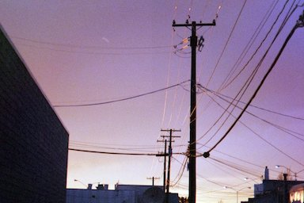
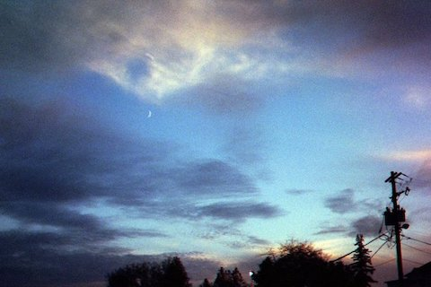

Why will your visitors come to your site instead of another to get this information or complete the actions? Compared to other websites, each visitor is welcomed with open arms on my website to visualize my hobby as an open online gallery, clean with no pop-ups, offers and other distractions, just film photography. Also everyone is welcome to post their work, no matter the experience they have on the field.

 - What questions will your visitors expect your site to answer for them? Each visitor can expect to see the world through my lens, literally, and get a little glimpse of my vision and interpretation of everything that surrounds us. They can see with their one eyes why a film picture would never be the same as a digital one and they will learn more about the process of shooting film. They will learn what “happy accidents mean” and how devastating can be when you wait weeks for some picture to get back from developing and they are nothing from what you expected. "
What types of activities will visitors want to complete on your site? Come to connect with others, socialize and see different places around the world through film pictures. Anyone would be able to post and tell their stories through pictures and they could socialize with people who share the same passion. They can also meet with other photographers from around they city and share their passion and then post the result and tell the story. “ Kodak sells film, but they don't advertise film; they advertise memories.” Theodore Levitt -
“ I really believe there are things nobody would see if I didn't photograph them.” Diane Arbus -
What information is necessary to complete any actions your site offers?
All you need is a film camera and a passion for photography. I really do think the word is different through film pictures, I noticed since I started doing film photography, I see different “ If you use film you can't see it, so you need to feel it.” Hervé Lewis -
- What questions will your visitors expect your site to answer for them? Each visitor can expect to see the world through my lens, literally, and get a little glimpse of my vision and interpretation of everything that surrounds us. They can see with their one eyes why a film picture would never be the same as a digital one and they will learn more about the process of shooting film. They will learn what “happy accidents mean” and how devastating can be when you wait weeks for some picture to get back from developing and they are nothing from what you expected. "
What types of activities will visitors want to complete on your site? Come to connect with others, socialize and see different places around the world through film pictures. Anyone would be able to post and tell their stories through pictures and they could socialize with people who share the same passion. They can also meet with other photographers from around they city and share their passion and then post the result and tell the story. “ Kodak sells film, but they don't advertise film; they advertise memories.” Theodore Levitt -
“ I really believe there are things nobody would see if I didn't photograph them.” Diane Arbus -
What information is necessary to complete any actions your site offers?
All you need is a film camera and a passion for photography. I really do think the word is different through film pictures, I noticed since I started doing film photography, I see different “ If you use film you can't see it, so you need to feel it.” Hervé Lewis -

Site plan
Contact
Instagram